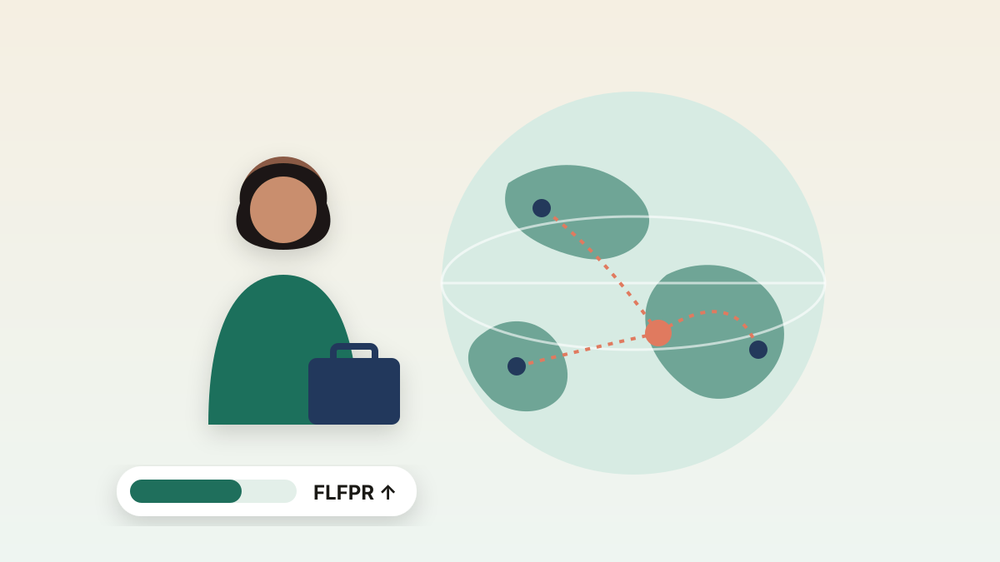

ARROW: Maritime Intelligence Platform
A shipbroking platform that pairs an AI market briefing (RAG) with route optimisation and fuel-strategy analysis.
Read more →
Open to opportunities
Data Science & Economics at NUS
I'm a Data Science and Economics undergraduate at the National University of Singapore, and at heart I'm a deeply curious person. My first instinct with anything new is to ask why: why a model behaves the way it does, why a market moves, why a result doesn't match my expectations. Knowing that something works is never quite enough for me. I want to understand how and why it works, so I go into each topic in depth until the logic makes sense from first principles. That habit has served me well in data science and economics, where the most valuable insights usually sit beneath the surface.
People who work with me would describe me as a jovial team player. I enjoy the energy of working with others, I like keeping spirits up when the pressure is on, and I'm at my best when the whole team is pulling in the same direction. At the same time, I hold myself to a high standard on the details: the assumption buried in a spreadsheet, the mislabelled chart, the line of code that quietly leaks data. My time as a Combat Engineer Officer in the Singapore Armed Forces, where small oversights carry real consequences, reinforced that discipline, and I bring it to every project and team I'm part of.
Outside of work and study, I like to stay active and keep exploring. I enjoy sports and love going on adventures, whether that means travelling somewhere unfamiliar, trying something I've never done before or seeing a familiar place from a new angle. Travelling has taught me to adapt quickly, stay comfortable with the unknown and connect with people from very different backgrounds. Those are the same qualities I bring to new problems, new teams and new challenges.
Things I've built, analysed and pitched.
Open any project for the full write-up, results and files.
A shipbroking platform that pairs an AI market briefing (RAG) with route optimisation and fuel-strategy analysis.
Read more →
 ★ Featured
★ Featured
We built full buy cases for two very different stocks, Capcom and Corteva, then chose to pitch Corteva (BUY, US$66.33 target).
Read more →
 ★ Featured
★ Featured
Forecasting relative humidity 1, 6 and 24 hours ahead with Random Forest, XGBoost, LSTM and a hybrid LSTM-XGBoost model.
Read more →

A statistically rigorous linear model of Singapore HDB resale prices that explains 88.6% of price variation.
Read more →

Comparing linear regression, decision trees, k-NN and principal component regression to predict HDB resale prices.
Read more →

NTU x MOM essay competition: a data-driven country similarity index and a policy proposal for Singapore.
Read more →

A Python system that pulls live and historical equity data and generates rule-based trading signals.
Read more →

Led a team researching investment opportunities, with a DCF valuation and a football field chart benchmarking 5 competitors.
Read more →
Developed a technology solution for the hard of hearing with a team of 5, from concept to final showcase.
Read more →
My journey so far, from leading soldiers to analysing fleets and teaching maths.
Tap “What I did” on any stop for details.
Dec 2022 – Nov 2023
Singapore Armed Forces
Apr 2024 – Jul 2024
Plutus Corporate Services Pte Ltd
May 2025 – Jul 2025
Pacific Carriers Limited · Business Management Office
May 2026 – Present Now
Tim Gan Math
Teach mathematics, mathematical reasoning and exam preparation.
Aug 2024 – May 2028 (expected)
Bachelor of Science in Data Science and Economics
Feb 2020 – Nov 2021
International Baccalaureate Diploma
What I've studied at NUS each semester, and the skills each one gave me.
Open a course for a short description.
Skills gained
Problem solving with code: variables, functions, control flow and recursion, plus testing and debugging programs.
Course page on NUSMods ↗Data science for economic data: wrangling, supervised and unsupervised learning, and model validation, all in R.
Course page on NUSMods ↗Limits, derivatives, integrals and first-order differential equations, with applications.
Course page on NUSMods ↗What makes science reliable, how to evaluate claims in a post-truth era, and the science of climate change.
Course page on NUSMods ↗Reading creative and analytical works from different eras to examine morality, society and identity.
Course page on NUSMods ↗Skills gained
How AI works, where it beats and falls short of humans, and the risks of deploying it. Built an AI proof-of-concept: my humidity forecasting project.
Course page on NUSMods ↗Conditional probability, random variables, joint distributions, expectation and the central limit theorem.
Course page on NUSMods ↗Systems of equations, matrices, determinants, vector spaces, eigenvalues and linear transformations.
Course page on NUSMods ↗The core concepts, methods and models of economics, applied to everyday life and current issues.
Course page on NUSMods ↗A people-centred approach to creative problem solving: learn from users, generate ideas fast and test them.
Course page on NUSMods ↗Foundations of social science: how researchers gather and interpret evidence on social issues in Singapore and beyond.
Course page on NUSMods ↗A comparative look at Asian societies and their diversity, with group field studies.
Course page on NUSMods ↗Skills gained
The workflow from raw data to insight: cleaning, exploring, analysing and visualising data, including time and geographic data.
Course page on NUSMods ↗The numerical methods behind data science, implemented in code and applied to real data problems.
Course page on NUSMods ↗Series, vectors, functions of several variables, partial derivatives, Lagrange multipliers and multiple integrals.
Course page on NUSMods ↗Intermediate microeconomics applied to managerial and public policy decisions.
Course page on NUSMods ↗Explaining science clearly to non-specialists, in writing and in speech, through public engagement activities.
Course page on NUSMods ↗An introduction to quantum theory, its counterintuitive phenomena, its history and emerging quantum technologies.
Course page on NUSMods ↗Financial management principles, investing fundamentals and the psychology of money.
Course page on NUSMods ↗Designing a personal system for money: automation, good versus bad debt, saving and investing.
Course page on NUSMods ↗Skills gained
Multiple linear regression, model building and diagnostics, ANOVA, and the linear model as a special case of the GLM.
Course page on NUSMods ↗Designing and implementing linked lists, stacks, queues, hash tables, heaps, trees and graphs, plus searching, sorting and complexity analysis.
Course page on NUSMods ↗General equilibrium, choice under uncertainty, game theory, oligopoly, network economics and asymmetric information.
Course page on NUSMods ↗Community development in theory and practice: asset-based approaches, participatory methods and consensus building.
Course page on NUSMods ↗Skills gained
Econometric methods for micro and macro data, with the focus on applying them independently to real problems in Stata.
Course page on NUSMods ↗Decisions under uncertainty, portfolio analysis, equilibrium asset pricing, fixed income and derivatives.
Course page on NUSMods ↗Modelling and solving large optimisation problems in data science: convexity, proximal and coordinate descent methods, and duality.
Course page on NUSMods ↗The theory of statistical inference: maximum likelihood, estimator properties, confidence intervals and hypothesis tests.
Course page on NUSMods ↗Tap a skill for a short explanation.